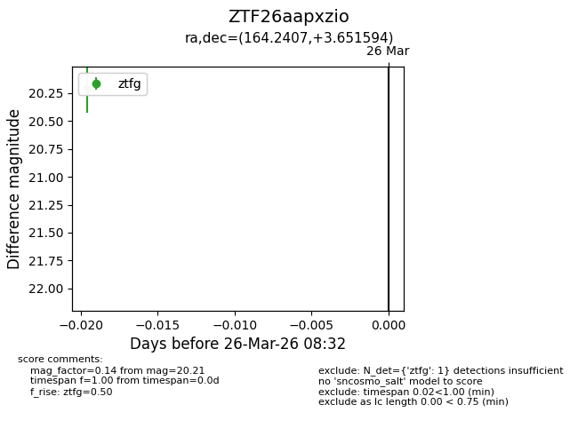
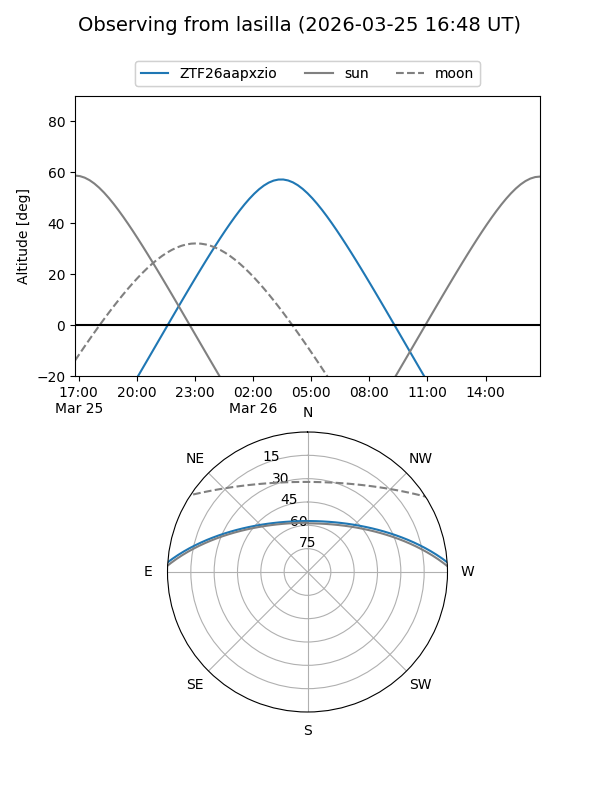
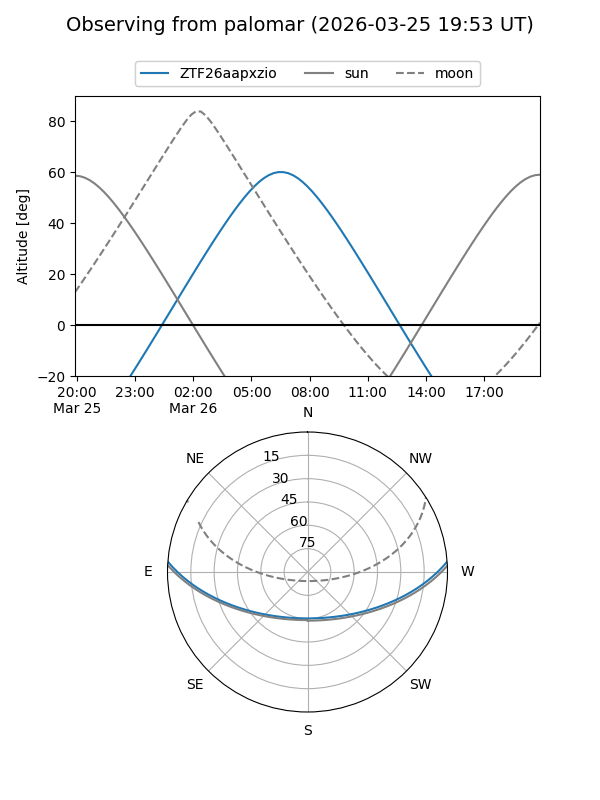

ZTF26aapxzio
Target ZTF26aapxzio at 2026-03-26 08:34
Aliases and brokers:
FINK: link
Lasair: link
ALeRCE: link
alt names
ZTF26aapxzio (ztf,fink_ztf)
Coordinates:
equatorial (ra, dec) = 164.2407,+3.65159
equatorial (HMS+DMS) = 10:56:57.76,+03:39:05.74
galactic (l, b) = (248.5762,+53.97005)
Flags:
Photometry:
last ztfg=20.21
1 ztfg detections
Lightcurve

Visibility


Additional plots